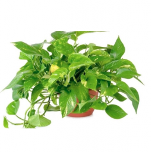
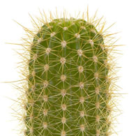
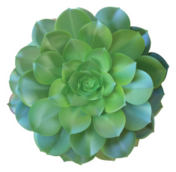

Plantas más populares:
Naturaleza y decoración
Potus

Es una popular planta de interior con numerosos cultivares
seleccionados por tener hojas variegadas de color amarillo,
blanco o verde claro. A menudo se utiliza como elemento
decorativo en centros comerciales, oficinas e instalaciones
públicas, principalmente porque es una especie de aspecto
atractivo, muy resistente y que requiere pocos cuidados.
Es también eficaz contra la contaminación ambiental en
interiores, eliminando formaldehído, xileno y benceno.
Cactus

La falta de luz hace que se ahílen, es decir,
que se estiren hacia la luz perdiendo su porte homogéneo.
Por tanto, deben colocarse junto a las ventanas o bien
utilizar alguna fuente de luz artificial.
Es de vital importancia no dañar las raíces porque podrían
penetrar hongos en la planta. Por lo tanto, en el momento
del trasplante se debe eliminar con mucho cuidado la tierra
que se quiere desechar con algún objeto sin filo. Si alguna
raíz ha resultado dañada, aplicar carbón vegetal pulverizado
y dejar sin regar durante unos 10 días.
Suculentas

Las plantas crasas o suculentas son aquellas que poseen un
órgano especializado en el almacenamiento de agua en
cantidades mayores que otras que no tienen esta adaptación.
Este órgano les permite reservar agua durante períodos
prolongados, y sobreviven a los largos períodos de sequía
en climas áridos.